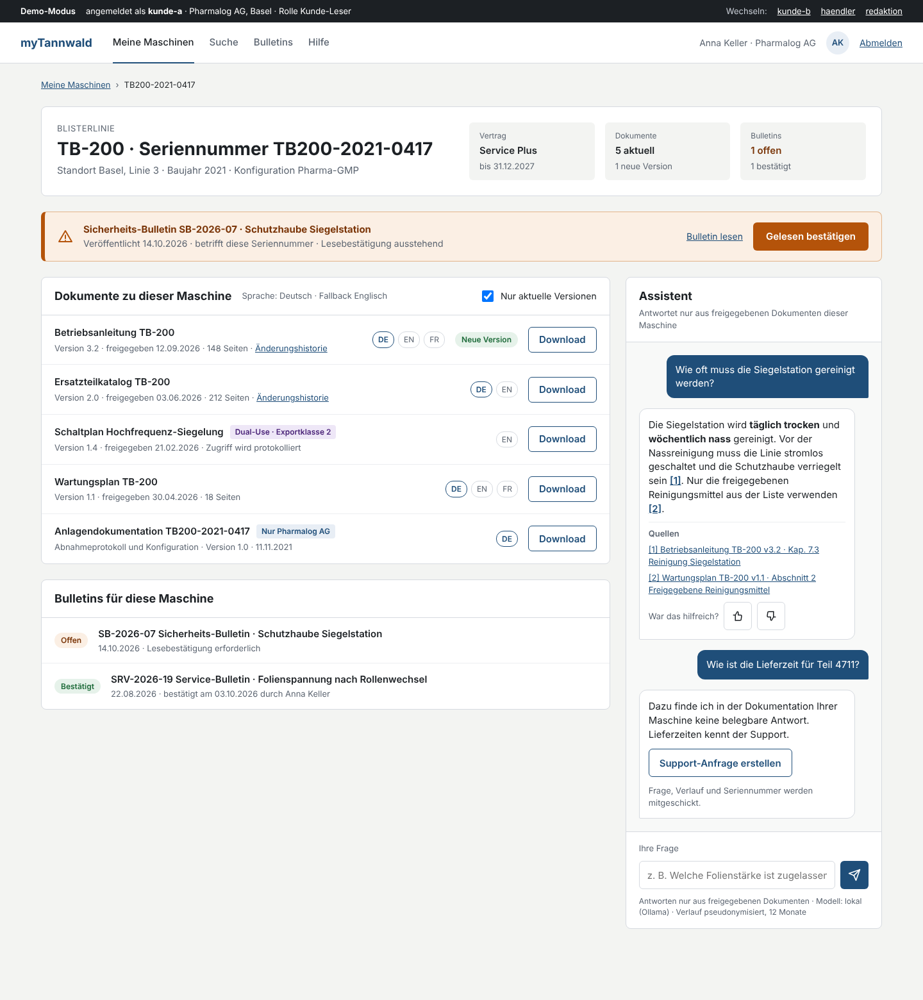
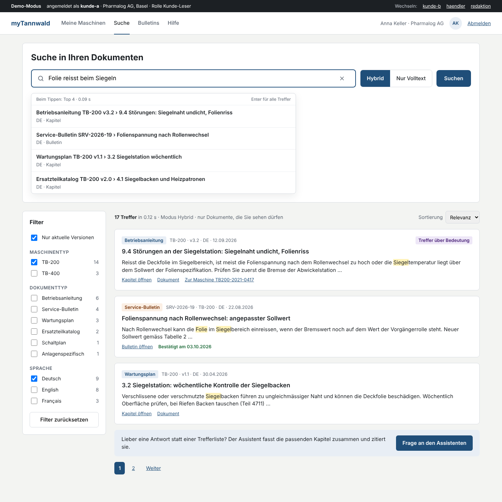
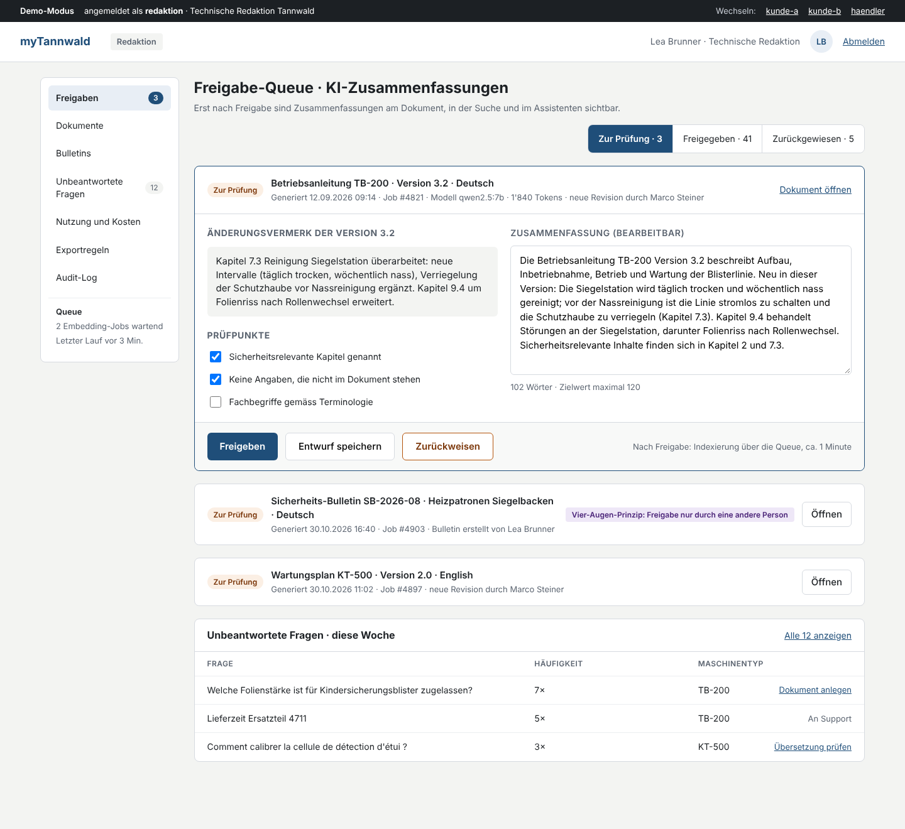

Proof of Concept · Block 5
myTannwald Kundenportal – Wireframes
Drei Screens als eigenständige HTML-Seiten. Die Navigation in den Screens verlinkt sie untereinander. Fiktiver Kunde, erfundene Daten.

1 · Maschinen-Detail mit Assistent Dokumente pro Seriennummer, Sicherheits-Bulletin, Dual-Use-Badge, Assistent mit Zitaten und Ablehnung. Rolle kunde-a.
2 · Suche: Hybrid / Nur Volltext Live-Resultate beim Tippen, Facetten, Treffer über Bedeutung, Brücke zum Assistenten. Rolle kunde-a.
3 · Redaktion: Freigabe-Queue KI-Zusammenfassung prüfen, freigeben oder zurückweisen, Vier-Augen-Prinzip, unbeantwortete Fragen. Rolle redaktion.Quelldateien des Design-Canvas liegen unter source/, Erläuterungen und Demo-Momente in README.md.